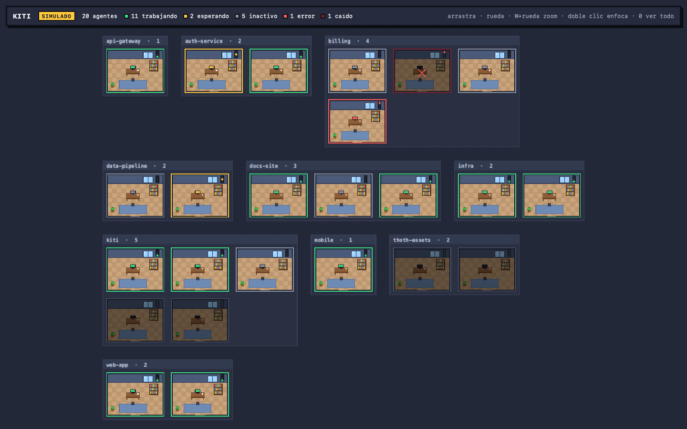
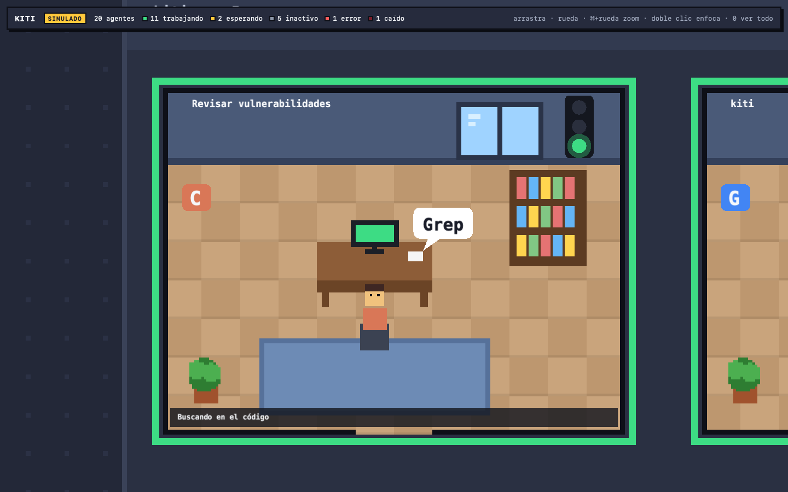
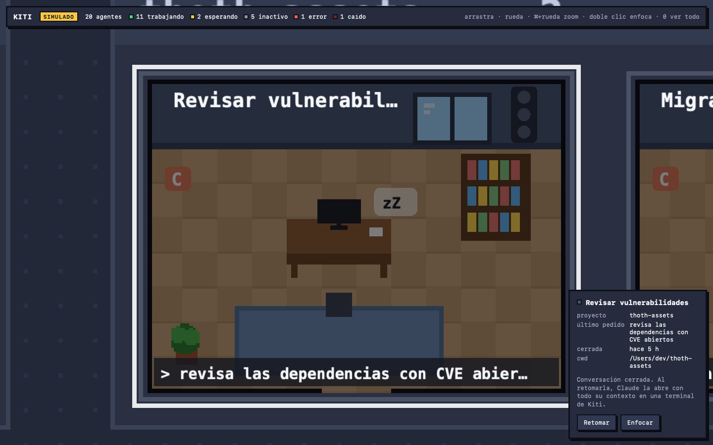

Your coding agents, as an office.
Every running Claude Code, Codex CLI and Gemini CLI agent becomes a room on one pixel-art map. A traffic light on each door tells you who is working, who is done and who needs you.
The demo runs in your browser with 20 simulated agents. Nothing is installed.

0 to see all
Open full screen →
One glance, four colours.
The status comes from the agents' own hooks and session files, computed in the Rust core. Kiti does not guess from the screen.
Working
A prompt was sent or a tool is running.
Waiting
The agent asks for a permission. It needs you.
Idle
The turn ended, or nothing happened for 30 s.
Error
The turn failed or the process died. A failed tool call is not red.
Built for a desk full of agents.
Kiti stays open all day next to your terminals. It finds the agents by itself and only asks for your attention when it matters.
Automatic detection
Finds agent processes by executable and argv, not by name. Launchers and desktop apps are ignored.
Zones per project
Offices are grouped by git root, so each repository is its own neighbourhood on the map.
Camera and detail
Pan, zoom and focus. Far away you see lights; close up you see the title, the current tool and the last request.
Embedded terminal
Launch agents from Kiti. They live in tmux and survive when you close the app.
Resume conversations
Closed Claude conversations from the last 7 days stay as dark offices. One click resumes them.
Notifications
macOS tells you when an agent asks for permission, finishes a long turn, fails or crashes, only when Kiti is in the background.
Zoom in on the one that needs you.
Double-click an office to see what the agent is doing. Hover for the project and the last request.


Twenty agents, and it feels like nothing.
Render on demand, culling outside the camera, incremental transcript reads and coalesced diffs at about 10 Hz. Measured on the native app.
Hooks in, map out.
A pure Rust core collects signals from the CLIs and the operating system, computes each status, and streams small diffs to a PixiJS world inside a Tauri v2 shell.
Signals
- Claude: native HTTP hooks
- Codex, Gemini:
kiti-hookforwarder - Processes via
sysinfo - Session files and transcripts
Rust core
- Hook server on 127.0.0.1
- Agent registry
- Pure status reducer
- PID ↔ session correlation
Office UI
- Tauri IPC channel
- PixiJS v8 world, custom camera
- React for panels only
- xterm.js terminal
Everything stays on your Mac.
Kiti has no server, no account and no telemetry. It watches your agents; it never talks back to them.
- Local only. The hook server listens on 127.0.0.1 with a per-install token and Host and Origin checks.
- Read-only towards agents. Every hook gets an empty 204. Kiti never approves or denies anything.
- No prompts in logs. Prompts, code and tool output are never logged or saved.
- Safe to close. Before each signal, Kiti verifies pid, start time, user and command, so it never kills a reused PID.
- Fails open. The forwarder has a 150 ms budget and always exits 0. If Kiti is closed, your CLI does not notice.
Build it in a few minutes.
Kiti runs on macOS and builds from source for now. Windows support is planned.
# tools (tmux is optional, for persistent sessions) brew install mise rustup tmux export PATH="/opt/homebrew/opt/rustup/bin:$PATH" # clone and install git clone https://github.com/xavieracostapolo/kiti.git && cd kiti mise install && mise exec -- pnpm install # run with the real agents on this Mac mise run app:dev # or build Kiti.app mise run app:bundle
Claude Code hooks are added on first start and removed with mise run hooks:uninstall. Codex and Gemini are opt-in: mise run hooks:install-codex or hooks:install-gemini. Full guide in the README.